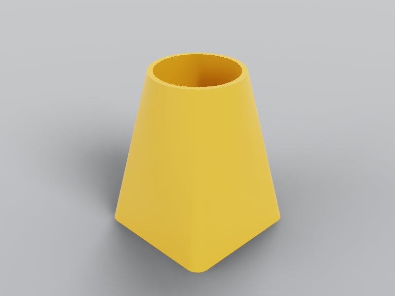

spring
Sweeps and lofts: a coil spring (a circle swept along a helix) and a square-to-round duct transition (a loft, shelled open at both ends). Run: cad run examples/spring.ts


Source
Run it with cad run examples/spring.ts.
// Sweeps and lofts: a coil spring (a circle swept along a helix) and a
// square-to-round duct transition (a loft, shelled open at both ends).
// Run: cad run examples/spring.ts
import { Plane, circle, helix, loft, model, param, rect } from "@cad/sdk";
export const spring = model("spring", () => {
const coil = param("coil_radius", 10, { min: 3, max: 40, unit: "mm" });
const wire = param("wire", 1.2, { min: 0.3, max: 4, step: 0.1, unit: "mm", description: "wire diameter" });
const pitch = param("pitch", 4, { min: 1, max: 15, step: 0.5, unit: "mm" });
const length = param("length", 40, { min: 5, max: 200, unit: "mm" });
// The helix starts at [coil, 0, 0] heading +Y and climbing pitch per turn: put the wire's
// section there, square to that direction (tilted by the helix angle), so the swept ends are
// clean round caps.
const lead = (Math.atan2(pitch, 2 * Math.PI * coil) * 180) / Math.PI;
const section = circle(wire / 2, { plane: Plane.XZ.moveTo([coil, 0, 0]) })
.rotate({ origin: [coil, 0, 0], dir: [1, 0, 0] }, lead);
return section
.sweep(helix(coil, pitch, length), { binormal: "Z" }) // binormal: no twist along a helix
.label("spring", { color: "#c0c4c8", material: "steel" });
});
export const duct = model("duct", () => {
const side = 40, round = 14, rise = 50;
const body = loft([rect(side, side, { radius: 4 }), circle(round, { plane: Plane.XY.offset(rise) })]);
return body.shell(">Z or <Z", -1.6).label("duct", { color: "#e0a030", material: "petg" });
});
if (import.meta.main) {
await spring();
await duct();
}